Suç
Suç filmi, kanun kaçaklarını, onları izleyenleri ve etraflarındaki düzeni anlatır. 1930'ların başındaki Hollywood gangster döngüsünden ve Fransız şiirsel gerçekçiliğinden doğdu; Melville'in soğukkanlı polisiyelerinde, Coppola ve Scorsese'nin Yeni Hollywood'unda, Hong Kong'un kahramanca kan davalarında ve Kore intikam dramalarında yeni biçimler buldu. En iyi örnekleri suçu sadakati, sınıfı ve hırsın bedelini incelemek için kullanır.
- Nerede
- ABD, Fransa, Japonya, Hong Kong, Güney Kore, İtalya
- Ne zaman
- 1900'lerden itibaren; gangster döngüsü yaklaşık 1930'da başlar
- Önemli isimler
- Fritz Lang, Jean-Pierre Melville, Francis Ford Coppola, Martin Scorsese, John Woo, Park Chan-wook
- Dönüm noktası filmler
- Yaralı Yüz (1932), Baba (1972), Sıkı Dostlar (1990), Çifte Kumpas (2002)
- Mirası
- Suçluyu trajik, bazen sempatik bir kahramana dönüştürdü
Nelere bakmalı
- Kapalı bir grubun içinde sadakat ve ihanet
- Ahlaki manzara olarak şehir
- Ayrıntısıyla planlanıp uygulanan soygunlar
- Birbirinin aynası olan polis ve suçlu
- Sonuçları olan şiddet
Bu türde en çok filmi olan yönetmenler
 Alfred Hitchcock12 filmMartin Scorsese12 film
Alfred Hitchcock12 filmMartin Scorsese12 film Fritz Lang11 filmJohnnie To10 film
Fritz Lang11 filmJohnnie To10 film Brian De Palma9 film
Brian De Palma9 film The Coen Brothers9 film
The Coen Brothers9 film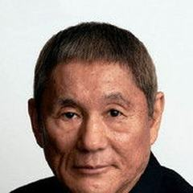
Takeshi Kitano8 filmAnurag Kashyap7 filmClaude Chabrol7 filmCosta-Gavras7 filmJohn Woo7 film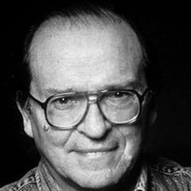
Sidney Lumet7 film David Fincher6 film
David Fincher6 film Francis Ford Coppola6 film
Francis Ford Coppola6 film Henri-Georges Clouzot6 filmJacques Audiard6 filmJean-Pierre Melville6 film
Henri-Georges Clouzot6 filmJacques Audiard6 filmJean-Pierre Melville6 film Quentin Tarantino6 film
Quentin Tarantino6 film Aki Kaurismäki5 film
Aki Kaurismäki5 film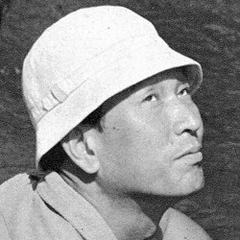
Akira Kurosawa5 film Don Siegel5 film
Don Siegel5 film Lars von Trier5 filmMichael Cimino5 filmPablo Trapero5 film
Lars von Trier5 filmMichael Cimino5 filmPablo Trapero5 filmTüm 283 yönetmeni gör
 Robert Siodmak5 film
Robert Siodmak5 film Steven Soderbergh5 film
Steven Soderbergh5 film Abel Ferrara4 film
Abel Ferrara4 film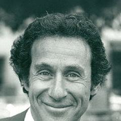
Arthur Penn4 filmFrançois Truffaut4 filmGuy Ritchie4 filmJean Renoir4 film Jean-Luc Godard4 film
Jean-Luc Godard4 film Jim Jarmusch4 film
Jim Jarmusch4 film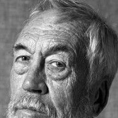
John Huston4 film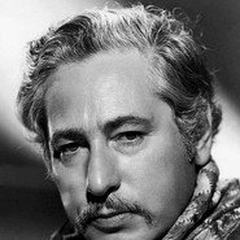
Josef von Sternberg4 filmJosé Padilha4 film Kathryn Bigelow4 film
Kathryn Bigelow4 film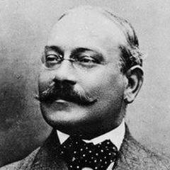
Louis Feuillade4 film Michael Curtiz4 film
Michael Curtiz4 film Michael Haneke4 film
Michael Haneke4 film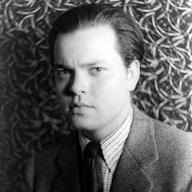
Orson Welles4 film Robert Altman4 film
Robert Altman4 film Seijun Suzuki4 film
Seijun Suzuki4 film Serdar Akar4 film
Serdar Akar4 film Stanley Kubrick4 film
Stanley Kubrick4 film Takashi Miike4 film
Takashi Miike4 film Vishal Bhardwaj4 filmWong Kar-wai4 filmAlan Parker3 filmAlberto Lattuada3 film
Vishal Bhardwaj4 filmWong Kar-wai4 filmAlan Parker3 filmAlberto Lattuada3 film Benjamin Christensen3 filmBertrand Tavernier3 film
Benjamin Christensen3 filmBertrand Tavernier3 film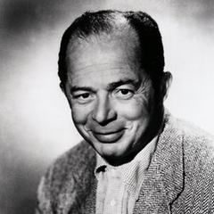
Billy Wilder3 filmBob Rafelson3 film Brillante Mendoza3 film
Brillante Mendoza3 film Danny Boyle3 film
Danny Boyle3 film Dario Argento3 film
Dario Argento3 film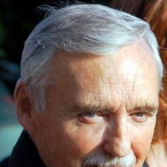
Dennis Hopper3 filmEdward Dmytryk3 filmEdward Yang3 filmElio Petri3 filmGiuseppe Tornatore3 filmGovind Nihalani3 film Hal Hartley3 filmHirokazu Kore-eda3 film
Hal Hartley3 filmHirokazu Kore-eda3 film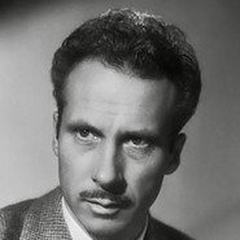
Jacques Becker3 film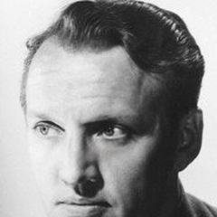
Joseph Losey3 film Julien Duvivier3 filmJuzo Itami3 filmKen Loach3 film
Julien Duvivier3 filmJuzo Itami3 filmKen Loach3 film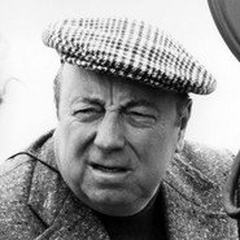
Marcel Carné3 film Mario Bava3 film
Mario Bava3 film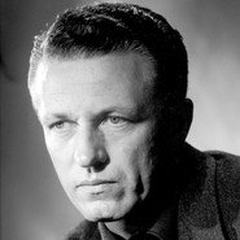
Nicholas Ray3 film Park Chan-wook3 filmRaoul Walsh3 filmRené Clément3 film
Park Chan-wook3 filmRaoul Walsh3 filmRené Clément3 film Richard Linklater3 film
Richard Linklater3 film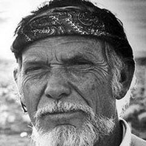
Sam Peckinpah3 filmShohei Imamura3 film Spike Lee3 filmStephen Frears3 filmThe Dardenne Brothers3 filmWilliam Wyler3 filmYoussef Chahine3 filmAgnieszka Holland2 filmAlexander Mackendrick2 film
Spike Lee3 filmStephen Frears3 filmThe Dardenne Brothers3 filmWilliam Wyler3 filmYoussef Chahine3 filmAgnieszka Holland2 filmAlexander Mackendrick2 film Ali Abbasi2 filmAndrey Zvyagintsev2 filmArturo Ripstein2 film
Ali Abbasi2 filmAndrey Zvyagintsev2 filmArturo Ripstein2 film Atom Egoyan2 filmBen Affleck2 film
Atom Egoyan2 filmBen Affleck2 film Bille August2 film
Bille August2 film Bong Joon-ho2 filmBruno Dumont2 filmCarol Reed2 filmChristopher Nolan2 filmCorneliu Porumboiu2 filmDamián Szifron2 film
Bong Joon-ho2 filmBruno Dumont2 filmCarol Reed2 filmChristopher Nolan2 filmCorneliu Porumboiu2 filmDamián Szifron2 film David Cronenberg2 film
David Cronenberg2 film David Lynch2 film
David Lynch2 film Deepa Mehta2 filmDiao Yinan2 film
Deepa Mehta2 filmDiao Yinan2 film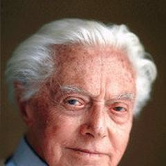
Dino Risi2 film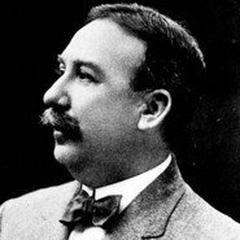
Edwin S. Porter2 film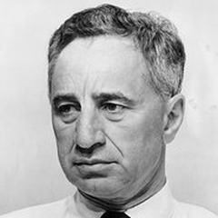
Elia Kazan2 filmEmir Kusturica2 film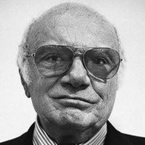
Francesco Rosi2 filmG.W. Pabst2 film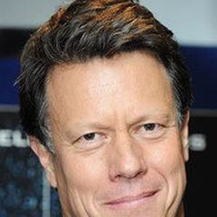
Gavin Hood2 filmGeorge Roy Hill2 filmGianni Amelio2 filmGlauber Rocha2 film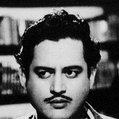
Guru Dutt2 film Gus Van Sant2 filmHany Abu-Assad2 filmHoward Hawks2 filmHéctor Babenco2 filmJacques Rivette2 filmJafar Panahi2 film
Gus Van Sant2 filmHany Abu-Assad2 filmHoward Hawks2 filmHéctor Babenco2 filmJacques Rivette2 filmJafar Panahi2 film Jean-Pierre Jeunet2 filmJia Zhangke2 film
Jean-Pierre Jeunet2 filmJia Zhangke2 film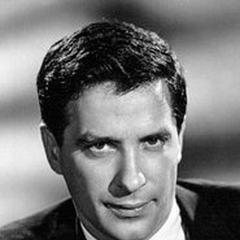
John Cassavetes2 film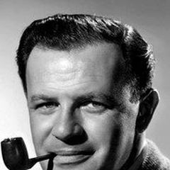
Joseph L. Mankiewicz2 filmKim Ki-duk2 film Lawrence Kasdan2 filmLee Chang-dong2 film
Lawrence Kasdan2 filmLee Chang-dong2 film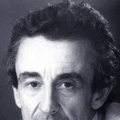
Louis Malle2 film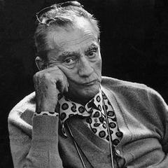
Luchino Visconti2 film Lütfi Ömer Akad2 filmMani Ratnam2 filmMario Monicelli2 filmMasahiro Shinoda2 film
Lütfi Ömer Akad2 filmMani Ratnam2 filmMario Monicelli2 filmMasahiro Shinoda2 film Matteo Garrone2 filmMax Ophüls2 filmMike Newell2 filmMira Nair2 film
Matteo Garrone2 filmMax Ophüls2 filmMike Newell2 filmMira Nair2 film Neil Jordan2 filmOliver Stone2 filmPablo Larraín2 film
Neil Jordan2 filmOliver Stone2 filmPablo Larraín2 film Paul Thomas Anderson2 filmPedro Almodóvar2 filmPeter Bogdanovich2 film
Paul Thomas Anderson2 filmPedro Almodóvar2 filmPeter Bogdanovich2 film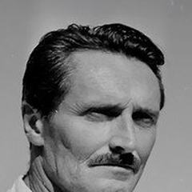
Pietro Germi2 film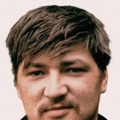
Rainer Werner Fassbinder2 film René Clair2 filmRobert Bresson2 film
René Clair2 filmRobert Bresson2 film Robert Wiene2 film
Robert Wiene2 film Roman Polanski2 film
Roman Polanski2 film Samuel Fuller2 filmSteve McQueen2 film
Samuel Fuller2 filmSteve McQueen2 film Steven Spielberg2 film
Steven Spielberg2 film Tod Browning2 film
Tod Browning2 film Werner Herzog2 film
Werner Herzog2 film William Friedkin2 filmWim Wenders2 film
William Friedkin2 filmWim Wenders2 film Woody Allen2 filmAbbas Kiarostami1 filmAlain Resnais1 filmAlain Tanner1 filmAlan J. Pakula1 filmAlejandro G. Iñárritu1 film
Woody Allen2 filmAbbas Kiarostami1 filmAlain Resnais1 filmAlain Tanner1 filmAlan J. Pakula1 filmAlejandro G. Iñárritu1 film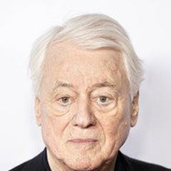
Alexander Kluge1 filmAlexander Nanau1 film Andrzej Żuławski1 filmAndré Cayatte1 filmAnn Hui1 filmAsghar Farhadi1 film
Andrzej Żuławski1 filmAndré Cayatte1 filmAnn Hui1 filmAsghar Farhadi1 film Ava DuVernay1 filmBarry Levinson1 film
Ava DuVernay1 filmBarry Levinson1 film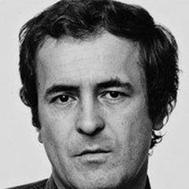
Bernardo Bertolucci1 filmBill Forsyth1 film Bo Widerberg1 filmBéla Tarr1 filmCarlos Reygadas1 filmCarlos Saura1 film
Bo Widerberg1 filmBéla Tarr1 filmCarlos Reygadas1 filmCarlos Saura1 film Charlie Chaplin1 filmCristian Mungiu1 filmD.W. Griffith1 film
Charlie Chaplin1 filmCristian Mungiu1 filmD.W. Griffith1 film Denis Villeneuve1 filmDerek Jarman1 film
Denis Villeneuve1 filmDerek Jarman1 film Derviş Zaim1 film
Derviş Zaim1 film Emin Alper1 film
Emin Alper1 film Erden Kıral1 film
Erden Kıral1 film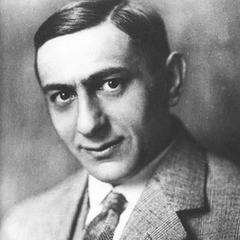
Ernst Lubitsch1 film F.W. Murnau1 filmFatih Akin1 film
F.W. Murnau1 filmFatih Akin1 film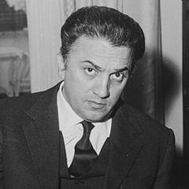
Federico Fellini1 filmFernando Meirelles1 filmFrank Capra1 film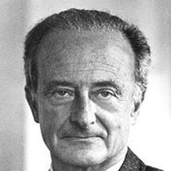
Fred Zinnemann1 filmFridrikh Ermler1 filmGeorge Cukor1 filmGiuseppe De Santis1 film Guillermo del Toro1 filmHal Ashby1 film
Guillermo del Toro1 filmHal Ashby1 film Harmony Korine1 filmHiroshi Teshigahara1 filmHou Hsiao-hsien1 film
Harmony Korine1 filmHiroshi Teshigahara1 filmHou Hsiao-hsien1 film Jean Delannoy1 film
Jean Delannoy1 film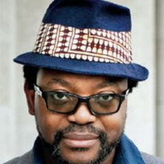
Jean-Pierre Bekolo1 film Jerzy Skolimowski1 film
Jerzy Skolimowski1 film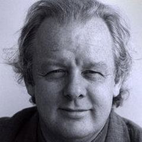
Jim Sheridan1 filmJohn Ford1 film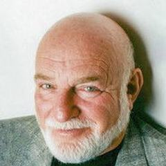
John Schlesinger1 filmJorge Sanjinés1 filmJuan Antonio Bardem1 filmJustine Triet1 filmKaouther Ben Hania1 filmKarim Aïnouz1 filmKeisuke Kinoshita1 filmKira Muratova1 filmKleber Mendonça Filho1 filmKrzysztof Kieślowski1 film Kunle Afolayan1 filmLadj Ly1 film
Kunle Afolayan1 filmLadj Ly1 film Lau Lauritzen Jr.1 filmLav Diaz1 filmLeopoldo Torre Nilsson1 film
Lau Lauritzen Jr.1 filmLav Diaz1 filmLeopoldo Torre Nilsson1 film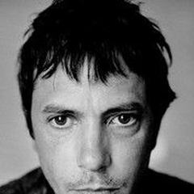
Leos Carax1 filmLina Wertmüller1 film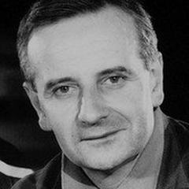
Lindsay Anderson1 filmLois Weber1 filmLucian Pintilie1 film Luis Buñuel1 film
Luis Buñuel1 film Lukas Moodysson1 filmLynne Ramsay1 filmMarco Bellocchio1 filmMarco Ferreri1 film
Lukas Moodysson1 filmLynne Ramsay1 filmMarco Bellocchio1 filmMarco Ferreri1 film Masaki Kobayashi1 film
Masaki Kobayashi1 film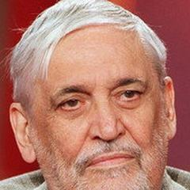
Maurice Pialat1 film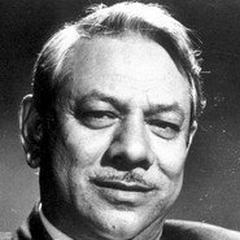
Mehboob Khan1 film Metin Erksan1 filmMichael Moore1 filmMichelangelo Antonioni1 film
Metin Erksan1 filmMichael Moore1 filmMichelangelo Antonioni1 film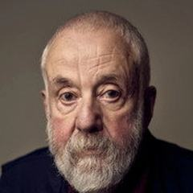
Mike Leigh1 filmMohammad Rasoulof1 filmMohsen Makhmalbaf1 filmNadav Lapid1 filmNeill Blomkamp1 film Nicolas Roeg1 filmNikita Mikhalkov1 filmNouri Bouzid1 film
Nicolas Roeg1 filmNikita Mikhalkov1 filmNouri Bouzid1 film Nuri Bilge Ceylan1 film
Nuri Bilge Ceylan1 film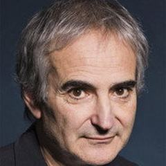
Olivier Assayas1 film Onur Ünlü1 film
Onur Ünlü1 film Oscar Micheaux1 filmOtar Iosseliani1 filmPaolo Sorrentino1 filmPaul Greengrass1 film
Oscar Micheaux1 filmOtar Iosseliani1 filmPaolo Sorrentino1 filmPaul Greengrass1 film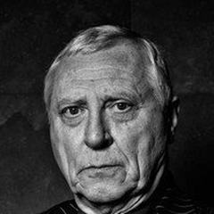
Peter Greenaway1 film Peter Jackson1 filmPeter Weir1 filmRaj Kapoor1 filmRalitza Petrova1 filmRaúl Ruiz1 film
Peter Jackson1 filmPeter Weir1 filmRaj Kapoor1 filmRalitza Petrova1 filmRaúl Ruiz1 film Ridley Scott1 filmRoland Joffé1 film
Ridley Scott1 filmRoland Joffé1 film Roy Andersson1 filmRuy Guerra1 filmSam Mendes1 filmSatoshi Kon1 film
Roy Andersson1 filmRuy Guerra1 filmSam Mendes1 filmSatoshi Kon1 film Sean Baker1 filmSergio Leone1 filmSergio Sollima1 filmShyam Benegal1 filmSofia Coppola1 film
Sean Baker1 filmSergio Leone1 filmSergio Sollima1 filmShyam Benegal1 filmSofia Coppola1 film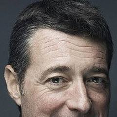
Srdjan Dragojević1 film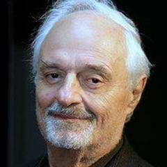
Ted Kotcheff1 filmTerrence Malick1 film Thomas Vinterberg1 filmTim Burton1 filmTodd Phillips1 filmTrần Anh Hùng1 filmTsai Ming-liang1 film
Thomas Vinterberg1 filmTim Burton1 filmTodd Phillips1 filmTrần Anh Hùng1 filmTsai Ming-liang1 film Tunç Okan1 film
Tunç Okan1 film Uğur Yücel1 filmVolker Schlöndorff1 film
Uğur Yücel1 filmVolker Schlöndorff1 film Walter Salles1 film
Walter Salles1 film Wes Anderson1 film
Wes Anderson1 film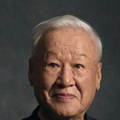
Xie Fei1 filmZeresenay Berhane Mehari1 film Ömer Kavur1 film
Ömer Kavur1 filmSık birlikte görülen türler
612 film, en yüksek puandan başlayarak
- The Godfather 1972 · Francis Ford Coppola · IMDb 9,2
- The Dark Knight 2008 · Christopher Nolan · IMDb 9,1
- 12 Angry Men 1957 · Sidney Lumet · IMDb 9,0
- The Godfather Part II 1974 · Francis Ford Coppola · IMDb 9,0
- Fight Club 1999 · David Fincher · IMDb 8,8
- Pulp Fiction 1994 · Quentin Tarantino · IMDb 8,8
- Goodfellas 1990 · Martin Scorsese · IMDb 8,7
- City of God 2002 · Fernando Meirelles · IMDb 8,6
- Se7en 1995 · David Fincher · IMDb 8,6
- Le Trou 1960 · Jacques Becker · IMDb 8,5
- The Departed 2006 · Martin Scorsese · IMDb 8,5
- High and Low 1963 · Akira Kurosawa · IMDb 8,4
- Witness for the Prosecution 1957 · Billy Wilder · IMDb 8,4
- Double Indemnity 1944 · Billy Wilder · IMDb 8,3
- M 1931 · Fritz Lang · IMDb 8,3
- Once Upon a Time in America 1984 · Sergio Leone · IMDb 8,3
- Scarface (1983) 1983 · Brian De Palma · IMDb 8,3
- 13th 2016 · Ava DuVernay · IMDb 8,2
- A Brighter Summer Day 1991 · Edward Yang · IMDb 8,2
- A Clockwork Orange 1971 · Stanley Kubrick · IMDb 8,2
- Casino 1995 · Martin Scorsese · IMDb 8,2
- Close-Up 1990 · Abbas Kiarostami · IMDb 8,2
- Kill Bill: Vol. 1 2003 · Quentin Tarantino · IMDb 8,2
- Los Olvidados 1950 · Luis Buñuel · IMDb 8,2
- No Country for Old Men 2007 · The Coen Brothers · IMDb 8,2
- Prisoners 2013 · Denis Villeneuve · IMDb 8,2
- Reservoir Dogs 1992 · Quentin Tarantino · IMDb 8,2
- Rocco and His Brothers 1960 · Luchino Visconti · IMDb 8,2
- Snatch 2000 · Guy Ritchie · IMDb 8,2
- Taxi Driver 1976 · Martin Scorsese · IMDb 8,2
- The Sting 1973 · George Roy Hill · IMDb 8,2
- Catch Me If You Can 2002 · Steven Spielberg · IMDb 8,1
- Collective 2019 · Alexander Nanau · IMDb 8,1
- Dial M for Murder 1954 · Alfred Hitchcock · IMDb 8,1
- Fargo 1996 · The Coen Brothers · IMDb 8,1
- In the Name of the Father 1993 · Jim Sheridan · IMDb 8,1
- Les Diaboliques 1955 · Henri-Georges Clouzot · IMDb 8,1
- Lock, Stock and Two Smoking Barrels 1998 · Guy Ritchie · IMDb 8,1
- Memories of Murder 2003 · Bong Joon-ho · IMDb 8,1
- On the Waterfront 1954 · Elia Kazan · IMDb 8,1
- Paper Moon 1973 · Peter Bogdanovich · IMDb 8,1
- Rashomon 1950 · Akira Kurosawa · IMDb 8,1
- The Big Lebowski 1998 · The Coen Brothers · IMDb 8,1
- Time of the Gypsies 1988 · Emir Kusturica · IMDb 8,1
- Trainspotting 1996 · Danny Boyle · IMDb 8,1
- White Heat 1949 · Raoul Walsh · IMDb 8,1
- Z 1969 · Costa-Gavras · IMDb 8,1
- Black Cat, White Cat 1998 · Emir Kusturica · IMDb 8,0
- Butch Cassidy and the Sundance Kid 1969 · George Roy Hill · IMDb 8,0
- Dog Day Afternoon 1975 · Sidney Lumet · IMDb 8,0
- Dogville 2003 · Lars von Trier · IMDb 8,0
- Elite Squad 2007 · José Padilha · IMDb 8,0
- Investigation of a Citizen Above Suspicion 1970 · Elio Petri · IMDb 8,0
- Kill Bill: Vol. 2 2004 · Quentin Tarantino · IMDb 8,0
- Le Samouraï 1967 · Jean-Pierre Melville · IMDb 8,0
- Perfect Blue 1997 · Satoshi Kon · IMDb 8,0
- Slumdog Millionaire 2008 · Danny Boyle · IMDb 8,0
- The 400 Blows 1959 · François Truffaut · IMDb 8,0
- The Wounds 1998 · Srdjan Dragojević · IMDb 8,0
- 3-Iron 2004 · Kim Ki-duk · IMDb 7,9
- A Short Film About Killing 1988 · Krzysztof Kieślowski · IMDb 7,9
- Arsenic and Old Lace 1944 · Frank Capra · IMDb 7,9
- Big Deal on Madonna Street 1958 · Mario Monicelli · IMDb 7,9
- Bowling for Columbine 2002 · Michael Moore · IMDb 7,9
- Carlito's Way 1993 · Brian De Palma · IMDb 7,9
- Chungking Express 1994 · Wong Kar-wai · IMDb 7,9
- Dancer in the Dark 2000 · Lars von Trier · IMDb 7,9
- Elevator to the Gallows 1958 · Louis Malle · IMDb 7,9
- Le Cercle rouge 1970 · Jean-Pierre Melville · IMDb 7,9
- Mildred Pierce 1945 · Michael Curtiz · IMDb 7,9
- Panique 1946 · Julien Duvivier · IMDb 7,9
- Pixote 1981 · Héctor Babenco · IMDb 7,9
- Rope 1948 · Alfred Hitchcock · IMDb 7,9
- Second Wind 1966 · Jean-Pierre Melville · IMDb 7,9
- Shoplifters 2018 · Hirokazu Kore-eda · IMDb 7,9
- Strangers on a Train 1951 · Alfred Hitchcock · IMDb 7,9
- The Bad Sleep Well 1960 · Akira Kurosawa · IMDb 7,9
- The Big Heat 1953 · Fritz Lang · IMDb 7,9
- The Big Sleep 1946 · Howard Hawks · IMDb 7,9
- The Killing 1956 · Stanley Kubrick · IMDb 7,9
- The Maltese Falcon 1941 · John Huston · IMDb 7,9
- The Roaring Twenties 1939 · Raoul Walsh · IMDb 7,9
- The Testament of Dr. Mabuse 1933 · Fritz Lang · IMDb 7,9
- Touch of Evil 1958 · Orson Welles · IMDb 7,9
- Trouble in Paradise 1932 · Ernst Lubitsch · IMDb 7,9
- A Prophet 2009 · Jacques Audiard · IMDb 7,8
- Angels with Dirty Faces 1938 · Michael Curtiz · IMDb 7,8
- Bus 174 2002 · José Padilha · IMDb 7,8
- Captain Phillips 2013 · Paul Greengrass · IMDb 7,8
- Dr. Mabuse the Gambler 1922 · Fritz Lang · IMDb 7,8
- Fury 1936 · Fritz Lang · IMDb 7,8
- Gaslight 1944 · George Cukor · IMDb 7,8
- Le Corbeau 1943 · Henri-Georges Clouzot · IMDb 7,8
- Lilya 4-ever 2002 · Lukas Moodysson · IMDb 7,8
- Mississippi Burning 1988 · Alan Parker · IMDb 7,8
- Monsieur Verdoux 1947 · Charlie Chaplin · IMDb 7,8
- Stray Dog 1949 · Akira Kurosawa · IMDb 7,8
- The Asphalt Jungle 1950 · John Huston · IMDb 7,8
- The Day of the Jackal 1973 · Fred Zinnemann · IMDb 7,8
- The Gentlemen 2019 · Guy Ritchie · IMDb 7,8
- The Girl with the Dragon Tattoo 2011 · David Fincher · IMDb 7,8 · Suç, Dram, Gizem
- The Hateful Eight 2015 · Quentin Tarantino · IMDb 7,8 · Suç, Dram, Gizem
- The Irishman 2019 · Martin Scorsese · IMDb 7,8 · Biyografi, Suç, Dram
- The King of Comedy 1982 · Martin Scorsese · IMDb 7,8 · Komedi, Suç, Dram
- The Untouchables 1987 · Brian De Palma · IMDb 7,8 · Suç, Dram, Gerilim
- Un borghese piccolo piccolo 1977 · Mario Monicelli · IMDb 7,8 · Komedi, Suç, Dram
- Badlands 1973 · Terrence Malick · IMDb 7,7 · Aksiyon, Suç, Dram
- Blue Velvet 1986 · David Lynch · IMDb 7,7 · Suç, Dram, Gizem
- Bonnie and Clyde 1967 · Arthur Penn · IMDb 7,7 · Aksiyon, Biyografi, Suç
- Death of a Cyclist 1955 · Juan Antonio Bardem · IMDb 7,7 · Suç, Dram
- Dirty Harry 1971 · Don Siegel · IMDb 7,7 · Aksiyon, Suç, Gerilim
- Donnie Brasco 1997 · Mike Newell · IMDb 7,7 · Biyografi, Suç, Dram
- Hana-bi 1997 · Takeshi Kitano · IMDb 7,7 · Suç, Dram, Romantik
- Hard Boiled 1992 · John Woo · IMDb 7,7 · Aksiyon, Suç, Gerilim
- Key Largo 1948 · John Huston · IMDb 7,7 · Aksiyon, Suç, Kara Film
- Le Doulos 1962 · Jean-Pierre Melville · IMDb 7,7 · Suç, Gerilim, Kara Film
- Miller's Crossing 1990 · The Coen Brothers · IMDb 7,7 · Suç, Dram, Gerilim
- Mother 2009 · Bong Joon-ho · IMDb 7,7 · Suç, Dram, Gizem
- Next Stop Paradise 1998 · Lucian Pintilie · IMDb 7,7 · Suç, Dram, Romantik
- O Brother, Where Art Thou? 2000 · The Coen Brothers · IMDb 7,7 · Macera, Komedi, Suç
- Ocean's Eleven 2001 · Steven Soderbergh · IMDb 7,7 · Suç, Gerilim
- Pale Flower 1964 · Masahiro Shinoda · IMDb 7,7 · Suç, Dram, Kara Film
- Pandora's Box 1929 · G.W. Pabst · IMDb 7,7 · Suç, Dram, Romantik
- Port of Shadows 1938 · Marcel Carné · IMDb 7,7 · Suç, Dram, Romantik
- Purple Noon 1960 · René Clément · IMDb 7,7 · Suç, Dram, Gerilim
- Quai des Orfèvres 1947 · Henri-Georges Clouzot · IMDb 7,7 · Suç, Dram
- Scarface 1932 · Howard Hawks · IMDb 7,7 · Aksiyon, Suç, Kara Film
- Scarlet Street 1945 · Fritz Lang · IMDb 7,7 · Suç, Dram, Kara Film
- Serpico 1973 · Sidney Lumet · IMDb 7,7 · Biyografi, Suç, Dram
- State of Siege 1972 · Costa-Gavras · IMDb 7,7 · Suç, Dram, Gizem
- The Best Offer 2013 · Giuseppe Tornatore · IMDb 7,7 · Suç, Dram, Gizem
- The Killer 1989 · John Woo · IMDb 7,7 · Aksiyon, Suç, Dram
- The Killers 1946 · Robert Siodmak · IMDb 7,7 · Suç, Dram, Kara Film
- The Lady Vanishes 1938 · Alfred Hitchcock · IMDb 7,7 · Suç, Dram, Gizem
- The Terrorizers 1986 · Edward Yang · IMDb 7,7 · Suç, Dram
- Zodiac 2007 · David Fincher · IMDb 7,7 · Suç, Dram, Gizem
- 21 Grams 2003 · Alejandro G. Iñárritu · IMDb 7,6 · Suç, Dram, Gerilim
- After Hours 1985 · Martin Scorsese · IMDb 7,6 · Komedi, Suç, Dram
- Anatomy of a Fall 2023 · Justine Triet · IMDb 7,6 · Suç, Dram, Gizem
- Band of Outsiders 1964 · Jean-Luc Godard · IMDb 7,6 · Komedi, Suç, Dram
- Barrabas 1920 · Louis Feuillade · IMDb 7,6 · Suç, Gerilim
- Bitter Rice 1949 · Giuseppe De Santis · IMDb 7,6 · Suç, Dram
- Breathless 1960 · Jean-Luc Godard · IMDb 7,6 · Suç, Dram
- Carandiru 2003 · Héctor Babenco · IMDb 7,6 · Suç, Dram
- Casque d'Or 1952 · Jacques Becker · IMDb 7,6 · Suç, Dram, Romantik
- Damnation 1988 · Béla Tarr · IMDb 7,6 · Suç, Dram, Kara Film
- Down by Law 1986 · Jim Jarmusch · IMDb 7,6 · Komedi, Suç, Dram
- Drunken Angel 1948 · Akira Kurosawa · IMDb 7,6 · Suç, Dram, Kara Film
- Eastern Promises 2007 · David Cronenberg · IMDb 7,6 · Suç, Dram, Gerilim
- Gone Baby Gone 2007 · Ben Affleck · IMDb 7,6 · Suç, Dram, Gizem
- In the Name of the Law 1949 · Pietro Germi · IMDb 7,6 · Suç, Dram
- Inside Man 2006 · Spike Lee · IMDb 7,6 · Suç, Dram, Gizem
- Le Jour se lève 1939 · Marcel Carné · IMDb 7,6 · Suç, Dram, Romantik
- Les Misérables 2019 · Ladj Ly · IMDb 7,6 · Suç, Dram, Gerilim
- Leviathan 2014 · Andrey Zvyagintsev · IMDb 7,6 · Suç, Dram
- Mafioso 1962 · Alberto Lattuada · IMDb 7,6 · Komedi, Suç, Dram
- Odd Man Out 1947 · Carol Reed · IMDb 7,6 · Suç, Dram, Kara Film
- Pickup on South Street 1953 · Samuel Fuller · IMDb 7,6 · Suç, Dram, Kara Film
- Pépé le Moko 1937 · Julien Duvivier · IMDb 7,6 · Suç, Dram, Romantik
- Road to Perdition 2002 · Sam Mendes · IMDb 7,6 · Suç, Dram, Gerilim
- Running on Empty 1988 · Sidney Lumet · IMDb 7,6 · Suç, Dram, Müzikal
- Stolen Children 1992 · Gianni Amelio · IMDb 7,6 · Suç, Dram
- The 39 Steps 1935 · Alfred Hitchcock · IMDb 7,6 · Suç, Gizem, Gerilim
- The French Connection 1971 · William Friedkin · IMDb 7,6 · Aksiyon, Suç, Dram
- The Ladykillers 1955 · Alexander Mackendrick · IMDb 7,6 · Komedi, Suç
- The Truth 1960 · Henri-Georges Clouzot · IMDb 7,6 · Suç, Dram, Romantik
- The Woman in the Window 1944 · Fritz Lang · IMDb 7,6 · Suç, Dram, Kara Film
- Thelma & Louise 1991 · Ridley Scott · IMDb 7,6 · Macera, Suç, Dram
- This Man Must Die 1969 · Claude Chabrol · IMDb 7,6 · Suç, Dram, Gerilim
- Touchez pas au grisbi 1954 · Jacques Becker · IMDb 7,6 · Suç, Dram
- Vengeance Is Mine 1979 · Shohei Imamura · IMDb 7,6 · Suç, Dram
- Vera Drake 2004 · Mike Leigh · IMDb 7,6 · Suç, Dram
- 12 2007 · Nikita Mikhalkov · IMDb 7,5 · Suç, Dram, Gerilim
- A Pure Formality 1994 · Giuseppe Tornatore · IMDb 7,5 · Suç, Dram, Gerilim
- Batman 1989 · Tim Burton · IMDb 7,5 · Suç
- BlacKkKlansman 2018 · Spike Lee · IMDb 7,5 · Biyografi, Komedi, Suç
- Blood Simple 1984 · The Coen Brothers · IMDb 7,5 · Suç, Dram, Kara Film
- Bob le flambeur 1956 · Jean-Pierre Melville · IMDb 7,5 · Suç, Dram, Gerilim
- Bullet in the Head 1990 · John Woo · IMDb 7,5 · Aksiyon, Suç, Dram
- Cairo Station 1958 · Youssef Chahine · IMDb 7,5 · Suç, Dram
- Death by Hanging 1968 · Nagisa Oshima · IMDb 7,5 · Komedi, Suç, Dram
- Delicatessen 1991 · Jean-Pierre Jeunet · IMDb 7,5 · Komedi, Suç
- Detective Story 1951 · William Wyler · IMDb 7,5 · Suç, Dram, Kara Film
- Escape from Alcatraz 1979 · Don Siegel · IMDb 7,5 · Biyografi, Suç, Dram
- Europa 1991 · Lars von Trier · IMDb 7,5 · Suç, Dram, Gerilim
- Fallen Angels 1995 · Wong Kar-wai · IMDb 7,5 · Komedi, Suç, Dram
- Fox and His Friends 1975 · Rainer Werner Fassbinder · IMDb 7,5 · Suç, Dram, Romantik
- Funny Games 1997 · Michael Haneke · IMDb 7,5 · Suç, Dram, Korku
- Gangs of New York 2002 · Martin Scorsese · IMDb 7,5 · Suç, Dram
- Ghost Dog: The Way of the Samurai 1999 · Jim Jarmusch · IMDb 7,5 · Suç, Dram
- Godless 2016 · Ralitza Petrova · IMDb 7,5 · Dram, Suç
- Hunger 2008 · Steve McQueen · IMDb 7,5 · Biyografi, Suç, Dram
- Il Bidone 1955 · Federico Fellini · IMDb 7,5 · Komedi, Suç, Dram
- In the Name of the Italian People 1971 · Dino Risi · IMDb 7,5 · Komedi, Suç, Gizem
- Jackie Brown 1997 · Quentin Tarantino · IMDb 7,5 · Suç, Dram, Gerilim
- Killers of the Flower Moon 2023 · Martin Scorsese · IMDb 7,5 · Suç, Dram, Tarih
- La Bête humaine 1938 · Jean Renoir · IMDb 7,5 · Suç, Dram, Kara Film
- La Chienne 1931 · Jean Renoir · IMDb 7,5 · Suç, Dram, Kara Film
- La Cérémonie 1995 · Claude Chabrol · IMDb 7,5 · Suç, Dram, Gerilim
- Lolita 1962 · Stanley Kubrick · IMDb 7,5 · Suç, Dram, Romantik
- Midnight Express 1978 · Alan Parker · IMDb 7,5 · Biyografi, Suç, Dram
- Mr. Klein 1976 · Joseph Losey · IMDb 7,5 · Suç, Dram, Gizem
- Murder, My Sweet 1944 · Edward Dmytryk · IMDb 7,5 · Suç, Dram, Kara Film
- Mystery Train 1989 · Jim Jarmusch · IMDb 7,5 · Komedi, Suç, Dram
- Norte, the End of History 2013 · Lav Diaz · IMDb 7,5 · Suç, Dram
- Olivier, Olivier 1992 · Agnieszka Holland · IMDb 7,5 · Macera, Suç, Dram
- Omar 2013 · Hany Abu-Assad · IMDb 7,5 · Suç, Dram, Romantik
- Ossessione 1943 · Luchino Visconti · IMDb 7,5 · Suç, Dram, Kara Film
- Pickpocket 1959 · Robert Bresson · IMDb 7,5 · Suç, Dram
- Pitfall 1962 · Hiroshi Teshigahara · IMDb 7,5 · Suç, Dram, Fantastik
- Rebels of the Neon God 1992 · Tsai Ming-liang · IMDb 7,5 · Suç, Dram, Romantik
- Sympathy for Mr. Vengeance 2002 · Park Chan-wook · IMDb 7,5 · Suç, Dram, Gerilim
- The Cook, the Thief, His Wife & Her Lover 1989 · Peter Greenaway · IMDb 7,5 · Suç, Dram
- The Docks of New York 1928 · Josef von Sternberg · IMDb 7,5 · Suç, Dram, Kara Film
- The Godfather Part III 1990 · Francis Ford Coppola · IMDb 7,5 · Suç, Dram
- The Lady from Shanghai 1947 · Orson Welles · IMDb 7,5 · Suç, Dram, Kara Film
- The Letter 1940 · William Wyler · IMDb 7,5 · Suç, Dram, Kara Film
- The Long Goodbye 1973 · Robert Altman · IMDb 7,5 · Komedi, Suç, Kara Film
- The Lower Depths 1936 · Jean Renoir · IMDb 7,5 · Suç, Dram, Romantik
- The Man Who Wasn't There 2001 · The Coen Brothers · IMDb 7,5 · Suç, Dram, Kara Film
- The Match Factory Girl 1990 · Aki Kaurismäki · IMDb 7,5 · Komedi, Suç, Dram
- The Mission 1999 · Johnnie To · IMDb 7,5 · Aksiyon, Suç
- The Player 1992 · Robert Altman · IMDb 7,5 · Komedi, Suç, Dram
- The Seed of the Sacred Fig 2024 · Mohammad Rasoulof · IMDb 7,5 · Suç, Dram, Gerilim
- The Town 2010 · Ben Affleck · IMDb 7,5 · Suç, Dram, Gerilim
- The Tuner 2004 · Kira Muratova · IMDb 7,5 · Komedi, Suç, Dram
- Tiempo de valientes 2005 · Damián Szifron · IMDb 7,5 · Aksiyon, Komedi, Suç
- Todo modo 1976 · Elio Petri · IMDb 7,5 · Suç, Dram
- Traffic (2000) 2000 · Steven Soderbergh · IMDb 7,5 · Suç, Dram, Gerilim
- Underworld 1927 · Josef von Sternberg · IMDb 7,5 · Suç, Dram, Kara Film
- A Better Tomorrow 1986 · John Woo · IMDb 7,4 · Aksiyon, Suç, Dram
- A History of Violence 2005 · David Cronenberg · IMDb 7,4 · Aksiyon, Suç, Dram
- Ariel 1988 · Aki Kaurismäki · IMDb 7,4 · Komedi, Suç, Dram
- Bad Education 2004 · Pedro Almodóvar · IMDb 7,4 · Suç, Dram
- Blow Out 1981 · Brian De Palma · IMDb 7,4 · Suç, Dram, Gizem
- Body Heat 1981 · Lawrence Kasdan · IMDb 7,4 · Suç, Dram, Kara Film
- Bring Me the Head of Alfredo Garcia 1974 · Sam Peckinpah · IMDb 7,4 · Aksiyon, Suç, Dram
- Bullets Over Broadway 1994 · Woody Allen · IMDb 7,4 · Komedi, Suç
- Burning 2018 · Lee Chang-dong · IMDb 7,4 · Suç, Dram, Gizem
- Crimson Gold 2003 · Jafar Panahi · IMDb 7,4 · Suç, Dram, Gerilim
- Criss Cross 1949 · Robert Siodmak · IMDb 7,4 · Suç, Dram, Kara Film
- Days of Being Wild 1990 · Wong Kar-wai · IMDb 7,4 · Suç, Dram, Romantik
- Election 2 2006 · Johnnie To · IMDb 7,4 · Suç, Dram, Gerilim
- Following 1998 · Christopher Nolan · IMDb 7,4 · Suç, Gizem, Kara Film
- Foreign Land 1995 · Walter Salles · IMDb 7,4 · Aksiyon, Suç, Dram
- It Was Just an Accident 2025 · Jafar Panahi · IMDb 7,4 · Suç, Dram, Gizem
- Kids Return 1996 · Takeshi Kitano · IMDb 7,4 · Suç, Dram
- Les Misérables (1998) 1998 · Bille August · IMDb 7,4 · Suç, Dram, Romantik
- Marathon Man 1976 · John Schlesinger · IMDb 7,4 · Suç, Dram, Gerilim
- Music Box 1989 · Costa-Gavras · IMDb 7,4 · Suç, Dram, Gerilim
- Paradise Now 2005 · Hany Abu-Assad · IMDb 7,4 · Suç, Dram, Gerilim
- Pierrot le Fou 1965 · Jean-Luc Godard · IMDb 7,4 · Suç, Dram, Romantik
- Pigs and Battleships 1961 · Shohei Imamura · IMDb 7,4 · Komedi, Suç, Dram
- Prince of the City 1981 · Sidney Lumet · IMDb 7,4 · Suç, Dram
- Rabid Dogs 1974 · Mario Bava · IMDb 7,4 · Suç, Dram, Gerilim
- Shoot the Piano Player 1960 · François Truffaut · IMDb 7,4 · Suç, Dram, Kara Film
- Sonatine 1993 · Takeshi Kitano · IMDb 7,4 · Aksiyon, Komedi, Suç
- Straw Dogs 1971 · Sam Peckinpah · IMDb 7,4 · Suç, Dram, Gerilim
- Suspense 1913 · Lois Weber · IMDb 7,4 · Gerilim, Suç
- Sweet Sixteen 2002 · Ken Loach · IMDb 7,4 · Suç, Dram
- The American Friend 1977 · Wim Wenders · IMDb 7,4 · Suç, Dram, Gizem
- The Child 2005 · The Dardenne Brothers · IMDb 7,4 · Suç, Dram, Romantik
- The Consequences of Love 2004 · Paolo Sorrentino · IMDb 7,4 · Suç, Dram, Romantik
- The Man Who Knew Too Much (1956) 1956 · Alfred Hitchcock · IMDb 7,4 · Suç, Dram, Gizem
- They Live by Night 1948 · Nicholas Ray · IMDb 7,4 · Suç, Dram, Kara Film
- Thérèse Raquin 1953 · Marcel Carné · IMDb 7,4 · Suç, Dram, Romantik
- Zatoichi 2003 · Takeshi Kitano · IMDb 7,4 · Aksiyon, Komedi, Suç
- if.... 1968 · Lindsay Anderson · IMDb 7,4 · Suç, Dram
- A Taxing Woman 1987 · Juzo Itami · IMDb 7,3 · Komedi, Suç
- And Then There Were None 1945 · René Clair · IMDb 7,3 · Suç, Dram, Gizem
- Atlantic City 1980 · Louis Malle · IMDb 7,3 · Suç, Dram, Romantik
- Before the Devil Knows You're Dead 2007 · Sidney Lumet · IMDb 7,3 · Suç, Dram, Gerilim
- Cape Fear 1991 · Martin Scorsese · IMDb 7,3 · Suç, Dram, Gerilim
- Coup de Torchon 1981 · Bertrand Tavernier · IMDb 7,3 · Komedi, Suç, Dram
- Detroit 2017 · Kathryn Bigelow · IMDb 7,3 · Suç, Dram, Tarih
- Elena 2011 · Andrey Zvyagintsev · IMDb 7,3 · Suç, Dram, Gerilim
- Face/Off 1997 · John Woo · IMDb 7,3 · Aksiyon, Suç, Bilim Kurgu
- Graduation 2016 · Cristian Mungiu · IMDb 7,3 · Suç, Dram
- Holy Spider 2022 · Ali Abbasi · IMDb 7,3 · Suç, Dram, Gerilim
- Into the Abyss 2011 · Werner Herzog · IMDb 7,3 · Suç, Belgesel, Dram
- L'Argent 1983 · Robert Bresson · IMDb 7,3 · Suç, Dram
- Les Vampires 1915 · Louis Feuillade · IMDb 7,3 · Aksiyon, Macera, Suç
- Mahjong 1996 · Edward Yang · IMDb 7,3 · Komedi, Suç, Dram
- Mona Lisa 1986 · Neil Jordan · IMDb 7,3 · Suç, Dram, Romantik
- Official Secrets 2019 · Gavin Hood · IMDb 7,3 · Biyografi, Suç, Dram
- Point Break 1991 · Kathryn Bigelow · IMDb 7,3 · Aksiyon, Suç, Gerilim
- Raising Arizona 1987 · The Coen Brothers · IMDb 7,3 · Komedi, Suç
- Read My Lips 2001 · Jacques Audiard · IMDb 7,3 · Suç, Dram, Romantik
- Running Out of Time 1999 · Johnnie To · IMDb 7,3 · Aksiyon, Suç, Dram
- Salvatore Giuliano 1962 · Francesco Rosi · IMDb 7,3 · Suç, Dram, Tarih
- Targets 1968 · Peter Bogdanovich · IMDb 7,3 · Suç, Dram, Gerilim
- The Getaway 1972 · Sam Peckinpah · IMDb 7,3 · Aksiyon, Suç, Gerilim
- The Informer 1935 · John Ford · IMDb 7,3 · Suç, Dram
- The Murderer Lives at Number 21 1942 · Henri-Georges Clouzot · IMDb 7,3 · Komedi, Suç, Gizem
- The Stranger 1946 · Orson Welles · IMDb 7,3 · Suç, Dram, Kara Film
- The Unfaithful Wife 1969 · Claude Chabrol · IMDb 7,3 · Suç, Dram, Gizem
- To Live and Die in L.A. 1985 · William Friedkin · IMDb 7,3 · Aksiyon, Suç, Dram
- Trust 1990 · Hal Hartley · IMDb 7,3 · Komedi, Suç, Dram
- Wall Street 1987 · Oliver Stone · IMDb 7,3 · Suç, Dram
- Witness 1985 · Peter Weir · IMDb 7,3 · Suç, Dram, Romantik
- Youth of the Beast 1963 · Seijun Suzuki · IMDb 7,3 · Aksiyon, Suç, Kara Film
- Amen. 2002 · Costa-Gavras · IMDb 7,2 · Biyografi, Suç, Dram
- Black River 1957 · Masaki Kobayashi · IMDb 7,2 · Aksiyon, Suç, Dram
- Black Snow 1989 · Xie Fei · IMDb 7,2 · Suç, Dram
- Blazing Sun 1954 · Youssef Chahine · IMDb 7,2 · Suç, Dram, Romantik
- Branded to Kill 1967 · Seijun Suzuki · IMDb 7,2 · Aksiyon, Suç, Dram
- Confidentially Yours 1983 · François Truffaut · IMDb 7,2 · Komedi, Suç, Gizem
- Crossfire 1947 · Edward Dmytryk · IMDb 7,2 · Suç, Dram, Kara Film
- Cry of the City 1948 · Robert Siodmak · IMDb 7,2 · Suç, Dram, Kara Film
- Dead End 1937 · William Wyler · IMDb 7,2 · Suç, Dram, Kara Film
- Decision to Leave 2022 · Park Chan-wook · IMDb 7,2 · Suç, Dram, Gizem
- Dheepan 2015 · Jacques Audiard · IMDb 7,2 · Suç, Dram
- Dirty Pretty Things 2002 · Stephen Frears · IMDb 7,2 · Suç, Dram, Gerilim
- Dogman 2018 · Matteo Garrone · IMDb 7,2 · Suç, Dram, Gerilim
- Drugstore Cowboy 1989 · Gus Van Sant · IMDb 7,2 · Suç, Dram
- Exiled 2006 · Johnnie To · IMDb 7,2 · Aksiyon, Suç, Dram
- Goodbye South, Goodbye 1996 · Hou Hsiao-hsien · IMDb 7,2 · Suç, Dram
- Heavenly Creatures 1994 · Peter Jackson · IMDb 7,2 · Biyografi, Suç, Dram
- Illustrious Corpses 1976 · Francesco Rosi · IMDb 7,2 · Suç, Gizem, Gerilim
- Judex 1916 · Louis Feuillade · IMDb 7,2 · Macera, Suç
- L.627 1992 · Bertrand Tavernier · IMDb 7,2 · Suç, Dram, Gerilim
- Messidor 1979 · Alain Tanner · IMDb 7,2 · Suç, Dram
- Murder on the Orient Express 1974 · Sidney Lumet · IMDb 7,2 · Suç, Dram, Gizem
- Natural Born Killers 1994 · Oliver Stone · IMDb 7,2 · Suç, Romantik
- Panic in the Streets 1950 · Elia Kazan · IMDb 7,2 · Suç, Dram, Kara Film
- Phantom Lady 1944 · Robert Siodmak · IMDb 7,2 · Suç, Dram, Kara Film
- RocknRolla 2008 · Guy Ritchie · IMDb 7,2 · Aksiyon, Suç, Gerilim
- Shallow Grave 1994 · Danny Boyle · IMDb 7,2 · Suç, Dram, Gerilim
- Strange Days 1995 · Kathryn Bigelow · IMDb 7,2 · Suç, Dram, Bilim Kurgu
- Take the Money and Run 1969 · Woody Allen · IMDb 7,2 · Komedi, Suç
- The Beat That My Heart Skipped 2005 · Jacques Audiard · IMDb 7,2 · Suç, Dram, Müzikal
- The Crime of Monsieur Lange 1936 · Jean Renoir · IMDb 7,2 · Komedi, Suç, Dram
- The Crying Game 1992 · Neil Jordan · IMDb 7,2 · Suç, Dram, Romantik
- The Ghost Writer 2010 · Roman Polanski · IMDb 7,2 · Suç, Dram, Gizem
- The Great Train Robbery 1903 · Edwin S. Porter · IMDb 7,2 · Aksiyon, Macera, Suç
- The Killing of a Chinese Bookie 1976 · John Cassavetes · IMDb 7,2 · Suç, Dram, Kara Film
- The Man on the Roof 1976 · Bo Widerberg · IMDb 7,2 · Aksiyon, Suç, Dram
- The Naked Kiss 1964 · Samuel Fuller · IMDb 7,2 · Suç, Dram, Kara Film
- The Secret Agent 2025 · Kleber Mendonça Filho · IMDb 7,2 · Suç, Dram, Gizem
- The Threepenny Opera 1931 · G.W. Pabst · IMDb 7,2 · Komedi, Suç, Dram
- Tsotsi 2005 · Gavin Hood · IMDb 7,2 · Suç, Dram
- Wild at Heart 1990 · David Lynch · IMDb 7,2 · Suç, Dram, Gerilim
- You Only Live Once 1937 · Fritz Lang · IMDb 7,2 · Suç, Dram, Kara Film
- 71 Fragments of a Chronology of Chance 1994 · Michael Haneke · IMDb 7,1 · Suç, Dram
- A Better Tomorrow II 1987 · John Woo · IMDb 7,1 · Aksiyon, Suç, Dram
- A Touch of Sin 2013 · Jia Zhangke · IMDb 7,1 · Suç, Dram
- Assassination 1964 · Masahiro Shinoda · IMDb 7,1 · Aksiyon, Suç, Dram
- Beauty and the Dogs 2017 · Kaouther Ben Hania · IMDb 7,1 · Suç, Dram, Gerilim
- Benny's Video 1992 · Michael Haneke · IMDb 7,1 · Suç, Dram
- Black God, White Devil 1964 · Glauber Rocha · IMDb 7,1 · Macera, Suç, Dram
- Blood and Black Lace 1964 · Mario Bava · IMDb 7,1 · Suç, Dram, Korku
- Blood of the Condor 1969 · Jorge Sanjinés · IMDb 7,1 · Suç, Dram
- Broker 2022 · Hirokazu Kore-eda · IMDb 7,1 · Komedi, Suç, Dram
- Brother 2000 · Takeshi Kitano · IMDb 7,1 · Suç, Dram, Gerilim
- Casualties of War 1989 · Brian De Palma · IMDb 7,1 · Aksiyon, Suç, Dram
- Cyclo 1995 · Trần Anh Hùng · IMDb 7,1 · Suç, Dram
- Deep Crimson 1996 · Arturo Ripstein · IMDb 7,1 · Suç, Dram, Romantik
- Election 2005 · Johnnie To · IMDb 7,1 · Suç, Dram, Gerilim
- Elephant 2003 · Gus Van Sant · IMDb 7,1 · Suç, Dram, Gerilim
- Fire 1996 · Deepa Mehta · IMDb 7,1 · Suç, Dram, Romantik
- Gates of Paris 1957 · René Clair · IMDb 7,1 · Suç, Dram, Romantik
- Gloria 1980 · John Cassavetes · IMDb 7,1 · Suç, Dram, Gerilim
- Guys and Dolls 1955 · Joseph L. Mankiewicz · IMDb 7,1 · Komedi, Suç, Müzikal
- Hard Eight 1996 · Paul Thomas Anderson · IMDb 7,1 · Suç, Dram
- I Hired a Contract Killer 1990 · Aki Kaurismäki · IMDb 7,1 · Komedi, Suç, Dram
- In the Fade 2017 · Fatih Akin · IMDb 7,1 · Suç, Dram, Gizem
- Klute 1971 · Alan J. Pakula · IMDb 7,1 · Suç, Gizem, Gerilim
- Mad Detective 2007 · Johnnie To · IMDb 7,1 · Suç, Gizem, Gerilim
- Marnie 1964 · Alfred Hitchcock · IMDb 7,1 · Suç, Dram, Gizem
- Mauvais Sang 1986 · Leos Carax · IMDb 7,1 · Suç, Dram, Romantik
- Mean Streets 1973 · Martin Scorsese · IMDb 7,1 · Suç, Dram, Gerilim
- Micmacs 2009 · Jean-Pierre Jeunet · IMDb 7,1 · Aksiyon, Komedi, Suç
- Mr. Arkadin 1955 · Orson Welles · IMDb 7,1 · Suç, Dram, Kara Film
- Night Moves 1975 · Arthur Penn · IMDb 7,1 · Suç, Dram, Kara Film
- Open Doors 1990 · Gianni Amelio · IMDb 7,1 · Suç, Dram
- Our Man in Havana 1959 · Carol Reed · IMDb 7,1 · Komedi, Suç, Dram
- Pietà 2012 · Kim Ki-duk · IMDb 7,1 · Suç, Dram, Gerilim
- Rumble Fish 1983 · Francis Ford Coppola · IMDb 7,1 · Suç, Dram, Romantik
- Simple Men 1992 · Hal Hartley · IMDb 7,1 · Suç, Dram, Romantik
- Story of a Love Affair 1950 · Michelangelo Antonioni · IMDb 7,1 · Suç, Dram, Kara Film
- Tangerine 2015 · Sean Baker · IMDb 7,1 · Komedi, Suç, Dram
- The Chase 1966 · Arthur Penn · IMDb 7,1 · Suç, Dram, Gerilim
- The Professor 1986 · Giuseppe Tornatore · IMDb 7,1 · Suç, Dram
- The Reckless Moment 1949 · Max Ophüls · IMDb 7,1 · Suç, Dram, Kara Film
- The Sniper 1952 · Edward Dmytryk · IMDb 7,1 · Suç, Dram, Kara Film
- The Traitor 2019 · Marco Bellocchio · IMDb 7,1 · Biyografi, Suç, Dram
- The Unholy Three 1925 · Tod Browning · IMDb 7,1 · Suç, Dram, Romantik
- Tokyo Drifter 1966 · Seijun Suzuki · IMDb 7,1 · Aksiyon, Suç
- Tori and Lokita 2022 · The Dardenne Brothers · IMDb 7,1 · Suç, Dram
- Under the Paris Sky 1951 · Julien Duvivier · IMDb 7,1 · Suç, Dram
- Violent Cop 1989 · Takeshi Kitano · IMDb 7,1 · Aksiyon, Suç, Dram
- Violette Nozière 1978 · Claude Chabrol · IMDb 7,1 · Suç, Dram, Gerilim
- War Dogs 2016 · Todd Phillips · IMDb 7,1 · Biyografi, Komedi, Suç
- We Are All Murderers 1952 · André Cayatte · IMDb 7,1 · Suç, Dram
- Whisky Galore! 1949 · Alexander Mackendrick · IMDb 7,1 · Komedi, Suç
- A Scanner Darkly 2006 · Richard Linklater · IMDb 7,0 · Animasyon, Komedi, Suç
- Antonio das Mortes 1969 · Glauber Rocha · IMDb 7,0 · Aksiyon, Suç, Dram
- As Tears Go By 1988 · Wong Kar-wai · IMDb 7,0 · Suç, Dram, Romantik
- Ash Is Purest White 2018 · Jia Zhangke · IMDb 7,0 · Suç, Dram, Romantik
- Bad Lieutenant 1992 · Abel Ferrara · IMDb 7,0 · Suç, Dram, Gerilim
- Border 2018 · Ali Abbasi · IMDb 7,0 · Suç, Dram, Fantastik
- Burn After Reading 2008 · The Coen Brothers · IMDb 7,0 · Komedi, Suç, Dram
- Caught 1949 · Max Ophüls · IMDb 7,0 · Suç, Dram, Kara Film
- Crime and Punishment 1983 · Aki Kaurismäki · IMDb 7,0 · Suç, Dram
- Deprisa, Deprisa 1981 · Carlos Saura · IMDb 7,0 · Suç, Dram, Romantik
- Dressed to Kill 1980 · Brian De Palma · IMDb 7,0 · Suç, Dram, Gizem
- Drug War 2012 · Johnnie To · IMDb 7,0 · Aksiyon, Suç, Dram
- Gomorrah 2008 · Matteo Garrone · IMDb 7,0 · Suç, Dram
- Joy House 1964 · René Clément · IMDb 7,0 · Suç, Dram, Romantik
- King Creole 1958 · Michael Curtiz · IMDb 7,0 · Suç, Dram, Müzikal
- L'Enfer 1994 · Claude Chabrol · IMDb 7,0 · Suç, Dram, Gerilim
- Leonera 2008 · Pablo Trapero · IMDb 7,0 · Suç, Dram
- Logan Lucky 2017 · Steven Soderbergh · IMDb 7,0 · Aksiyon, Komedi, Suç
- Madame Satã 2002 · Karim Aïnouz · IMDb 7,0 · Biyografi, Suç, Dram
- Nightmare Alley 2021 · Guillermo del Toro · IMDb 7,0 · Suç, Dram, Kara Film
- Os Cafajestes 1962 · Ruy Guerra · IMDb 7,0 · Suç, Dram
- Out of Sight 1998 · Steven Soderbergh · IMDb 7,0 · Komedi, Suç, Dram
- PTU 2003 · Johnnie To · IMDb 7,0 · Aksiyon, Suç, Dram
- Party Girl 1958 · Nicholas Ray · IMDb 7,0 · Suç, Dram, Kara Film
- Police, Adjective 2009 · Corneliu Porumboiu · IMDb 7,0 · Suç, Dram
- Riot in Cell Block 11 1954 · Don Siegel · IMDb 7,0 · Suç, Dram, Kara Film
- Sabotage 1936 · Alfred Hitchcock · IMDb 7,0 · Suç, Gerilim
- The Angels' Share 2012 · Ken Loach · IMDb 7,0 · Komedi, Suç, Dram
- The Dark Mirror 1946 · Robert Siodmak · IMDb 7,0 · Suç, Dram, Kara Film
- The Hands of Orlac 1924 · Robert Wiene · IMDb 7,0 · Suç, Korku, Gizem
- The Hit 1984 · Stephen Frears · IMDb 7,0 · Suç, Dram, Gerilim
- The Killers (1964) 1964 · Don Siegel · IMDb 7,0 · Suç, Dram, Kara Film
- The Outsiders 1983 · Francis Ford Coppola · IMDb 7,0 · Suç, Dram
- The Private Life of Sherlock Holmes 1970 · Billy Wilder · IMDb 7,0 · Macera, Komedi, Suç
- Thunderbolt and Lightfoot 1974 · Michael Cimino · IMDb 7,0 · Aksiyon, Komedi, Suç
- Tie Me Up! Tie Me Down! 1989 · Pedro Almodóvar · IMDb 7,0 · Komedi, Suç, Dram
- Un flic 1972 · Jean-Pierre Melville · IMDb 7,0 · Suç, Gerilim
- We Still Kill the Old Way 1967 · Elio Petri · IMDb 7,0 · Suç, Dram, Gizem
- Beyond a Reasonable Doubt 1956 · Fritz Lang · IMDb 6,9 · Suç, Dram, Kara Film
- Blackmail 1929 · Alfred Hitchcock · IMDb 6,9 · Suç, Dram, Gizem
- Bottle Rocket 1996 · Wes Anderson · IMDb 6,9 · Komedi, Suç, Dram
- Clockers 1995 · Spike Lee · IMDb 6,9 · Suç, Dram, Gizem
- Cruel Story of Youth 1960 · Nagisa Oshima · IMDb 6,9 · Suç, Dram
- Difret 2014 · Zeresenay Berhane Mehari · IMDb 6,9 · Biyografi, Suç, Dram
- Dillinger Is Dead 1969 · Marco Ferreri · IMDb 6,9 · Suç, Dram
- Everybody Knows 2018 · Asghar Farhadi · IMDb 6,9 · Suç, Dram, Gizem
- Gozu 2003 · Takashi Miike · IMDb 6,9 · Suç, Dram, Korku
- Green Fish 1997 · Lee Chang-dong · IMDb 6,9 · Suç, Dram
- Ichi the Killer 2001 · Takashi Miike · IMDb 6,9 · Suç, Dram
- King of New York 1990 · Abel Ferrara · IMDb 6,9 · Suç, Gerilim
- Life Without Principle 2011 · Johnnie To · IMDb 6,9 · Suç, Dram
- Mississippi Mermaid 1969 · François Truffaut · IMDb 6,9 · Suç, Dram, Romantik
- Opera 1987 · Dario Argento · IMDb 6,9 · Suç, Korku, Gizem
- Revolver 1973 · Sergio Sollima · IMDb 6,9 · Suç, Dram, Gerilim
- The Barefoot Contessa 1954 · Joseph L. Mankiewicz · IMDb 6,9 · Suç, Dram, Gizem
- The Clan 2015 · Pablo Trapero · IMDb 6,9 · Biyografi, Suç, Dram
- The Limey 1999 · Steven Soderbergh · IMDb 6,9 · Suç, Dram, Gizem
- Thieves Like Us 1974 · Robert Altman · IMDb 6,9 · Suç, Dram, Romantik
- Tirador 2007 · Brillante Mendoza · IMDb 6,9 · Suç, Dram
- Treasure of San Gennaro 1966 · Dino Risi · IMDb 6,9 · Komedi, Suç
- Va savoir 2001 · Jacques Rivette · IMDb 6,9 · Komedi, Suç, Dram
- While the City Sleeps 1956 · Fritz Lang · IMDb 6,9 · Suç, Dram, Kara Film
- Bernie 2011 · Richard Linklater · IMDb 6,8 · Biyografi, Komedi, Suç
- Body Double 1984 · Brian De Palma · IMDb 6,8 · Suç, Dram, Gizem
- Boiling Point 1990 · Takeshi Kitano · IMDb 6,8 · Aksiyon, Komedi, Suç
- Brewster McCloud 1970 · Robert Altman · IMDb 6,8 · Komedi, Suç, Fantastik
- Bugsy 1991 · Barry Levinson · IMDb 6,8 · Biyografi, Suç, Dram
- Bugsy Malone 1976 · Alan Parker · IMDb 6,8 · Komedi, Suç, Aile
- Carancho 2010 · Pablo Trapero · IMDb 6,8 · Suç, Dram, Romantik
- Chappie 2015 · Neill Blomkamp · IMDb 6,8 · Aksiyon, Suç, Dram
- El Bonaerense 2002 · Pablo Trapero · IMDb 6,8 · Suç, Dram
- Family Plot 1976 · Alfred Hitchcock · IMDb 6,8 · Komedi, Suç, Dram
- Favourites of the Moon 1984 · Otar Iosseliani · IMDb 6,8 · Komedi, Suç, Dram
- Four Nights with Anna 2008 · Jerzy Skolimowski · IMDb 6,8 · Suç, Dram
- Frantic 1988 · Roman Polanski · IMDb 6,8 · Suç, Dram, Gizem
- Grand Canyon 1991 · Lawrence Kasdan · IMDb 6,8 · Suç, Dram
- Hit Man 2023 · Richard Linklater · IMDb 6,8 · Komedi, Suç, Romantik
- Lights in the Dusk 2006 · Aki Kaurismäki · IMDb 6,8 · Suç, Dram
- Manon 1949 · Henri-Georges Clouzot · IMDb 6,8 · Suç, Dram
- Ms. 45 1981 · Abel Ferrara · IMDb 6,8 · Suç, Dram, Gerilim
- Neruda 2016 · Pablo Larraín · IMDb 6,8 · Biyografi, Suç, Dram
- Outrage 2010 · Takeshi Kitano · IMDb 6,8 · Aksiyon, Suç, Dram
- Panic Room 2002 · David Fincher · IMDb 6,8 · Suç, Dram, Gerilim
- Poor Cow 1967 · Ken Loach · IMDb 6,8 · Suç, Dram, Romantik
- Regeneration 1915 · Raoul Walsh · IMDb 6,8 · Biyografi, Suç, Dram
- The Bandit 1946 · Alberto Lattuada · IMDb 6,8 · Suç, Dram
- The Criminal 1960 · Joseph Losey · IMDb 6,8 · Suç, Dram, Gerilim
- The Grifters 1990 · Stephen Frears · IMDb 6,8 · Suç, Dram, Kara Film
- The Grim Reaper 1962 · Bernardo Bertolucci · IMDb 6,8 · Suç, Dram, Gizem
- The House That Jack Built 2018 · Lars von Trier · IMDb 6,8 · Suç, Dram, Korku
- The Sugarland Express 1974 · Steven Spielberg · IMDb 6,8 · Suç, Dram
- The Testimony 1946 · Pietro Germi · IMDb 6,8 · Suç, Dram
- Time Without Pity 1957 · Joseph Losey · IMDb 6,8 · Suç, Dram, Kara Film
- Tony Manero 2008 · Pablo Larraín · IMDb 6,8 · Suç, Dram, Müzikal
- Widows 2018 · Steve McQueen · IMDb 6,8 · Suç, Dram, Gerilim
- Year of the Dragon 1985 · Michael Cimino · IMDb 6,8 · Aksiyon, Suç, Dram
- Young and Innocent 1937 · Alfred Hitchcock · IMDb 6,8 · Suç, Dram, Gizem
- A Taxing Woman's Return 1988 · Juzo Itami · IMDb 6,7 · Komedi, Suç
- Amateur 1994 · Hal Hartley · IMDb 6,7 · Komedi, Suç, Dram
- Black Coal, Thin Ice 2014 · Diao Yinan · IMDb 6,7 · Suç, Dram, Kara Film
- Breaking News 2004 · Johnnie To · IMDb 6,7 · Aksiyon, Suç, Dram
- Colors 1988 · Dennis Hopper · IMDb 6,7 · Suç, Dram, Gerilim
- Dead or Alive 1999 · Takashi Miike · IMDb 6,7 · Aksiyon, Suç, Dram
- Días de odio 1954 · Leopoldo Torre Nilsson · IMDb 6,7 · Suç, Dram
- Le Pont du Nord 1981 · Jacques Rivette · IMDb 6,7 · Macera, Suç, Dram
- Merci pour le chocolat 2000 · Claude Chabrol · IMDb 6,7 · Suç, Dram, Gizem
- Once a Thief 1991 · John Woo · IMDb 6,7 · Aksiyon, Komedi, Suç
- Performance 1970 · Nicolas Roeg · IMDb 6,7 · Suç, Dram
- Phenomena 1985 · Dario Argento · IMDb 6,7 · Suç, Korku, Gizem
- Prizzi's Honor 1985 · John Huston · IMDb 6,7 · Komedi, Suç, Dram
- That Sinking Feeling 1979 · Bill Forsyth · IMDb 6,7 · Komedi, Suç
- The Blackbird 1926 · Tod Browning · IMDb 6,7 · Suç, Dram, Romantik
- The Element of Crime 1984 · Lars von Trier · IMDb 6,7 · Suç, Dram, Gerilim
- The Killer (2023) 2023 · David Fincher · IMDb 6,7 · Aksiyon, Macera, Suç
- The Man Who Knew Too Much (1934) 1934 · Alfred Hitchcock · IMDb 6,7 · Suç, Dram, Gizem
- The Power of Emotion 1983 · Alexander Kluge · IMDb 6,7 · Suç, Dram
- The Third Murder 2017 · Hirokazu Kore-eda · IMDb 6,7 · Suç, Dram, Gizem
- The Wild Goose Lake 2019 · Diao Yinan · IMDb 6,7 · Suç, Dram, Kara Film
- You Were Never Really Here 2017 · Lynne Ramsay · IMDb 6,7 · Suç, Dram, Gerilim
- Bad Lieutenant: Port of Call New Orleans 2009 · Werner Herzog · IMDb 6,6 · Suç, Dram, Gizem
- Black Rain 1989 · Shohei Imamura · IMDb 6,6 · Aksiyon, Suç, Dram
- Dance with a Stranger 1985 · Mike Newell · IMDb 6,6 · Biyografi, Suç, Dram
- Humanité 1999 · Bruno Dumont · IMDb 6,6 · Suç, Dram, Gizem
- Inherent Vice 2014 · Paul Thomas Anderson · IMDb 6,6 · Komedi, Suç, Dram
- Knock on Any Door 1949 · Nicholas Ray · IMDb 6,6 · Suç, Dram, Kara Film
- Making Of 2006 · Nouri Bouzid · IMDb 6,6 · Suç, Dram
- Marriage of the Blessed 1989 · Mohsen Makhmalbaf · IMDb 6,6 · Suç, Dram, Savaş
- Rider on the Rain 1970 · René Clément · IMDb 6,6 · Suç, Dram, Gizem
- Seven Footprints to Satan 1929 · Benjamin Christensen · IMDb 6,6 · Komedi, Suç, Dram
- Shinjuku Triad Society 1995 · Takashi Miike · IMDb 6,6 · Suç, Dram, Gizem
- The Cotton Club 1984 · Francis Ford Coppola · IMDb 6,6 · Suç, Dram, Müzikal
- The Funeral 1996 · Abel Ferrara · IMDb 6,6 · Suç, Dram
- The Musketeers of Pig Alley 1912 · D.W. Griffith · IMDb 6,6 · Suç, Dram
- The Postman Always Rings Twice 1981 · Bob Rafelson · IMDb 6,6 · Suç, Dram, Romantik
- The Story of Woo Viet 1981 · Ann Hui · IMDb 6,6 · Suç, Dram
- To Catch a Killer 2023 · Damián Szifron · IMDb 6,6 · Aksiyon, Suç, Dram
- Without Pity 1948 · Alberto Lattuada · IMDb 6,6 · Suç, Dram, Romantik
- Bleak Street 2015 · Arturo Ripstein · IMDb 6,5 · Suç, Dram
- City of Joy 1992 · Roland Joffé · IMDb 6,5 · Suç, Dram
- Danger: Diabolik 1968 · Mario Bava · IMDb 6,5 · Aksiyon, Komedi, Suç
- Dear Wendy 2005 · Thomas Vinterberg · IMDb 6,5 · Komedi, Suç, Dram
- Four Flies on Grey Velvet 1971 · Dario Argento · IMDb 6,5 · Suç, Gizem, Gerilim
- Killer's Kiss 1955 · Stanley Kubrick · IMDb 6,5 · Suç, Dram, Kara Film
- Kinatay 2009 · Brillante Mendoza · IMDb 6,5 · Suç, Dram, Korku
- Police 1985 · Maurice Pialat · IMDb 6,5 · Suç, Dram, Romantik
- See How They Fall 1994 · Jacques Audiard · IMDb 6,5 · Suç, Dram
- Stavisky 1974 · Alain Resnais · IMDb 6,5 · Biyografi, Suç, Dram
- The Rose on His Arm 1956 · Keisuke Kinoshita · IMDb 6,5 · Aksiyon, Suç, Dram
- The Shanghai Gesture 1941 · Josef von Sternberg · IMDb 6,5 · Suç, Dram, Kara Film
- The Unknown Girl 2016 · The Dardenne Brothers · IMDb 6,5 · Suç, Dram, Gizem
- Weekend at Bernie's 1989 · Ted Kotcheff · IMDb 6,5 · Macera, Komedi, Suç
- White Elephant 2012 · Pablo Trapero · IMDb 6,5 · Suç, Dram
- An American Tragedy 1931 · Josef von Sternberg · IMDb 6,4 · Suç, Dram, Romantik
- Betrayed 1988 · Costa-Gavras · IMDb 6,4 · Suç, Dram, Gerilim
- Black Widow 1987 · Bob Rafelson · IMDb 6,4 · Suç, Dram, Gizem
- Coogan's Bluff 1968 · Don Siegel · IMDb 6,4 · Aksiyon, Suç, Gerilim
- Doctor X 1932 · Michael Curtiz · IMDb 6,4 · Komedi, Suç, Korku
- Genealogies of a Crime 1997 · Raúl Ruiz · IMDb 6,4 · Suç, Dram, Gerilim
- Hammett 1982 · Wim Wenders · IMDb 6,4 · Suç, Dram, Gizem
- Landru 1963 · Claude Chabrol · IMDb 6,4 · Biyografi, Suç, Dram
- Love Is Colder Than Death 1969 · Rainer Werner Fassbinder · IMDb 6,4 · Komedi, Suç
- October 1 2014 · Kunle Afolayan · IMDb 6,4 · Suç, Dram, Gizem
- The Hot Spot 1990 · Dennis Hopper · IMDb 6,4 · Suç, Dram, Kara Film
- Where the Truth Lies 2005 · Atom Egoyan · IMDb 6,4 · Suç, Gizem, Gerilim
- Giliap 1975 · Roy Andersson · IMDb 6,3 · Suç, Dram
- Mickey One 1965 · Arthur Penn · IMDb 6,3 · Suç, Dram
- Pistol Opera 2001 · Seijun Suzuki · IMDb 6,3 · Aksiyon, Suç, Dram
- Policeman 2011 · Nadav Lapid · IMDb 6,3 · Suç, Dram
- Prénom Carmen 1983 · Jean-Luc Godard · IMDb 6,3 · Suç, Dram, Müzikal
- Smilla's Sense of Snow 1997 · Bille August · IMDb 6,3 · Suç, Dram, Gizem
- Spoor 2017 · Agnieszka Holland · IMDb 6,3 · Suç, Dram, Gizem
- The Whistlers 2019 · Corneliu Porumboiu · IMDb 6,3 · Komedi, Suç, Dram
- Body and Soul 1925 · Oscar Micheaux · IMDb 6,2 · Suç, Dram, Gerilim
- Femme Fatale 2002 · Brian De Palma · IMDb 6,2 · Suç, Dram, Gizem
- Alpha, The Right to Kill 2018 · Brillante Mendoza · IMDb 6,1 · Suç, Dram, Gerilim
- Redacted 2007 · Brian De Palma · IMDb 6,1 · Suç, Gerilim, Savaş
- RoboCop 2014 · José Padilha · IMDb 6,1 · Aksiyon, Suç, Bilim Kurgu
- The Haunted Castle (1921) 1921 · F.W. Murnau · IMDb 6,1 · Suç, Dram, Korku
- The Sunchaser 1996 · Michael Cimino · IMDb 6,1 · Suç, Dram
- Blood and Wine 1996 · Bob Rafelson · IMDb 6,0 · Suç, Dram, Gerilim
- Boxcar Bertha 1972 · Martin Scorsese · IMDb 6,0 · Suç, Dram, Romantik
- Jubilee 1978 · Derek Jarman · IMDb 5,9 · Komedi, Suç, Dram
- The Captive 2014 · Atom Egoyan · IMDb 5,9 · Suç, Dram, Gizem
- 8 Million Ways to Die 1986 · Hal Ashby · IMDb 5,8 · Aksiyon, Suç, Dram
- Blue Steel 1990 · Kathryn Bigelow · IMDb 5,8 · Aksiyon, Suç, Dram
- Cosmos 2015 · Andrzej Żuławski · IMDb 5,7 · Komedi, Suç, Dram
- The Bling Ring 2013 · Sofia Coppola · IMDb 5,6 · Biyografi, Suç, Dram
- The Kleptomaniac 1905 · Edwin S. Porter · IMDb 5,6 · Suç, Dram
- Battle in Heaven 2005 · Carlos Reygadas · IMDb 5,5 · Suç, Dram
- Desperate Hours 1990 · Michael Cimino · IMDb 5,4 · Aksiyon, Suç, Dram
- The Dead Don't Die 2019 · Jim Jarmusch · IMDb 5,4 · Aksiyon, Komedi, Suç
- The Sicilian 1987 · Michael Cimino · IMDb 5,4 · Aksiyon, Suç, Dram
- Emilia Pérez 2024 · Jacques Audiard · IMDb 5,3 · Suç, Dram, Müzikal
- Spring Breakers 2012 · Harmony Korine · IMDb 5,3 · Suç, Dram, Gerilim
- Beeba Boys 2015 · Deepa Mehta · IMDb 4,9 · Suç, Dram, Gerilim
- Aristotle's Plot 1996 · Jean-Pierre Bekolo · Komedi, Suç, Gizem
- Backtrack 1990 · Dennis Hopper · Suç, Gerilim
- Camorra 1985 · Lina Wertmüller · Suç, Dram
- Carlos 2010 · Olivier Assayas · Biyografi, Suç, Gerilim
- Chaos, This Is Life 2007 · Youssef Chahine · Dram, Suç, Gerilim
- Counterplan 1932 · Fridrikh Ermler · Dram, Suç
- Elite Squad: The Enemy Within 2010 · José Padilha · Suç, Aksiyon, Dram
- Fantômas 1913 · Louis Feuillade · Suç, Macera, Gizem
- Funny Games U.S. 2007 · Michael Haneke · Gerilim, Korku, Suç
- Lady Vengeance 2005 · Park Chan-wook · Suç, Gerilim, Dram
- Maigret Sets a Trap 1958 · Jean Delannoy · Suç, Gizem
- Minbo 1992 · Juzo Itami · Komedi, Suç
- Night of Revenge 1916 · Benjamin Christensen · Dram, Suç
- P'tit Quinquin 2014 · Bruno Dumont · Komedi, Suç, Gizem
- Raskolnikov 1923 · Robert Wiene · Dram, Suç
- The Axe 2005 · Costa-Gavras · Komedi, Suç, Dram
- The Clockmaker of St. Paul 1974 · Bertrand Tavernier · Suç, Dram
- The Lost Honour of Katharina Blum 1975 · Volker Schlöndorff · Dram, Suç
- The Mysterious X 1914 · Benjamin Christensen · Gerilim, Savaş, Suç
- The Sleeping Car Murders 1965 · Costa-Gavras · Gizem, Suç, Gerilim
- The Thousand Eyes of Dr. Mabuse 1960 · Fritz Lang · Suç, Gerilim, Gizem
- The True Face 1951 · Lau Lauritzen Jr. · Suç, Gizem, Gerilim